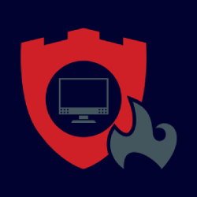

Eğitimler
Beyaz Şapkalı Hacker Eğitimi
Bu eğitim programı, öğrencilerin siber güvenlik uzmanları tarafından kullanılan araç ve yöntemlerle
beyaz şapkalı hacker/siber güvenlik uzmanı olarak faaliyet yürütmesi konusunda gerekli bilgi ve beceriyi sağlamayı amaçlamaktadır.
Öğrencilerimiz bu eğitimle; zararlı yazılım, kriptografi, parola kırma, bilgi toplama, enumerasyon ve iz silme gibi hacking yöntemlerini
kavrayabilmekte ve öğrenebilmektedir.
Eğitime Kayıt ol
Kimler Katılabilir?
- Öğrenciler
- Bilgi Teknolojileri Çalışanları
- Ağ Yöneticileri
- Sistem Yöneticileri
- Veritabanı Yöneticileri
Linux Server Yönetimi Eğitimi
Temelden ileri seviyeye doğru Linux bilgisi edindirmeyi amaçlayan ve ağırlıklı olarak lab uygulamaları ile işlenen bu eğitimde, katılımcılara
Linux işletim sisteminin mimarisi, komutları, kurulum ve konfigürasyonu anlatılır. Eğitimde kazanılan beceriler ile Linux sistem yöneticisi
olma yolunda önemli adımlar atılmış olunur.
Eğitime Kayıt ol
Kimler Katılabilir?
- Öğrenciler
- Sistem Yöneticileri
- Bilgi Teknolojileri Çalışanları
- Ağ Uzmanları
- Veritabanı Yöneticileri

Sızma Testi Uzmanlığı Eğitimi
Bu eğitim, siber uzay üzerinden gelebilecek her türlü tehdide karşı gerekli önlemlerin alınması için kullanılan sızma testleriyle ilgili
teorik ve pratik bilgileri kapsamaktadır.
Eğitim boyunca öğrenci Kali Linux veya Parrot Security OS dağıtımları üzerindeki çeşitli araç
ve zafiyet tarayıcılarıyla günümüzün popüler uygulamaları Nessus, Metasploit gibi
uygulamaları kullanmayı detaylıca öğrenmektedir.
Eğitime Kayıt ol
Kimler Katılabilir?
- Öğrenciler
- Bilgi Teknolojileri Çalışanları
- Kolluk Kuvvetleri
- Web Uygulama Yöneticileri
- Sistem Yöneticileri